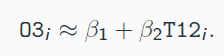
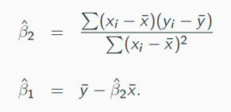
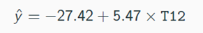
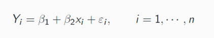
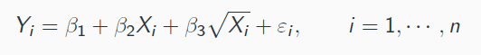
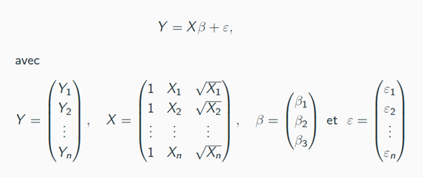

Régression linéaire
Régression linéaire
L'objectif de la régression est de construire un modèle permettant de modéliser les relations entre plusieurs variables, dans un but d'analyse ou afin de réaliser des prédictions ou des prévisions. Les objectifs sont doubles :
Expliquer une variable Y par des variables X, et donc mettre au jour les liens entre la variable Y et ces variables ;
Prédire de nouvelles valeurs pour Y.
Dans le cas de la régression linéaire, il s'agit de chercher une fonction f telle que :

Dans cette exemple, il s'agit d'une fonction pour prédire un pic d'ozone(O3) en fonction de la température (T12)
Le modèle linéaire est pertinent si la relation entre les variables est linéaire (et non sinusoïdale ou autre).
Afin de déterminer cette fonction, il faut choisir un critère appelé fonction de coût. Nous choisissons le coût quadratique. Notre droite sera donc la droite des moindres. Cela permet d'éviter d'avoir de très fortes erreurs dans le modèle, puisqu'elles seront élevées au carré (et donc facilement identifiables).
Dans le cas présent, les minimiseurs sont Beta et Beta2.

Dans le cas du modèle prédictif de la température, l'équation est donc la suivante :

Avant de lancer une régression, il peut être intéressant de regarder les coefficients de corrélation entre les variables explicatives et la variable à expliquer. Si tous les coefficients sont faibles à priori le modèle ne sera pas très bon.
Principes de modélisation
Nous considérons le modèle suivant :

Ici :
Xi (la température T12) est fixée (connue)
Epsiloni (erreur due à l'imprécision modèle & mesure) est aléatoire
Yi (l'ozone O3) est aléatoire
Beta1 et Beta2 sont fixes et inconnus.
L'objectif du modèle est de fournir des estimateurs de Beta1 et Beta2.
Les estimateurs des moindres carrés sont les suivants :

Une fois ces éléments posés, nous pouvons nous poser les questions suivantes :
Quelles sont les propriétés des estimateurs ?
Quelles est la variabilité / précision de l'estimateur ?
Le modèle est-il bon ?
Quelle est la variabilité de la prévision ?
Dans R :
La création d'un modèle linéaire est réalisé avec la fonction lm().
La variable à expliquer (Y) est placée en avant, les variables explicatives par la suite, séparées de la variable à expliquer par le ~. Si on prend toutes les variables contenues dans le data frame, on peut utiliser le « . ».
La constante Beta1 est toujours sous-entendue. Pour la retirer, il est faut ajouter -1 devant les variables explicatives.
La lecture des résultats de la fonction est réalisée de la façon suivante.
Call : rappel de la formule du modèle
Coefficients :
Estimate : estimation de l'estimateur
Std. Error : écart-type de l'estimateur
T value : estimation divisée par l'écart-type. Il faut qu'elle soit supérieure à |2| pour que la variable ait un effet dans le modèle
Pr (> |t|) : résultat du test statistique. Il permet de déterminer si on refuse l'hypothèse que les estimateurs (Beta1 ou Beta2 ici) vaillent 0. Dans le cas présent, nous rejetons cette hypothèse dans les 2 cas, car le résultat est inférieur à 5% (0.05).
Logique de mise en application
La construction d'un modèle suppose de réaliser les étapes suivantes :
- On mesure des variables – on construit un tableau de données
- Dans ces variables, on identifie une variable à expliquer et une (ou plusieurs) variables (potentiellement) explicatives
- On suppose que la variable à expliquer suive la fonction suivante :
y = Beta1 + Beta2 * variableExp + épsilon (bruit)
- On cherche à estimer les paramètres Beta1 et Beta2. Pour ce faire, on détermine la fonction de coût que l'on souhaite appliquer (ici, moindres carrés ordinaires)
- On utilise la fonction lm() pour obtenir les estimateurs, la variance de chaque coefficient et la statistique de test (si H0 est vérifiée, le paramètre est égal à 0)
Régression linéaire multiple
Présentation du cas d’étude et modélisation
Dans le cas de la régression linéaire multiple (ou classification supervisée quand la variable à expliquer est qualitative), plusieurs variables explicatives sont mobilisées pour expliquer une variable Y.

L'écriture matricielle est la suivante :

S'agissant de l'erreur epsilon, nous faisons l'hypothèse que son espérance vaut 0 et que sa variance est égale à son écart-type.
Estimation
La fonction de coût est les moindres carrés ordinaires. Nous cherchons donc la fonction qui minime le « coût ». Celle-ci permet de définir des estimateurs appelés Beta chapeau (chapeau car ils sont estimés au regard des données à notre disposition).
Les résultats sont :
L'estimation des coefficients
Les valeurs ajustées (fitted values)
Les résidus (residuals)
Ajustement et prévision
A partir de nos estimateurs, on peut donner une prévision. Celle-ci est néanmoins toujours accompagnée d'un intervalle de confiance (et donc déterminer la variabilité du modèle).
Variabilité
Plusieurs dimensions peuvent être étudiées afin de déterminer la précision du modèle :
L'espérance et la variance de Beta chapeau
L'intervalle de confiance de Beta i
L'intervalle de confiance de Y*
Y* est une variable aléatoire. L'objectif du modèle est d'avoir un écart faible entre Y* - Y* chapeau.
Qualité du modèle
Plusieurs éléments peuvent être mobilisés afin de déterminer la qualité du modèle :
Le R². Il est compris entre 0 et 1. C'est une première mesure mais elle est peu fiable : le R² augmente mécaniquement lorsque le nombre de variables augmente.
Regarder les résidus studentisés. Ces derniers permettent de déterminer si une observation qu'on réalise « arrive » souvent ou non, c'est-à-dire les points aberrants. On peut les identifier via les résidus studentisés du modèle (rstudent(modele$residuals))
Identifier les points leviers, via la fonction hatvalues().
Ajustement et prévision
Réaliser une prévision, c'est étendre ses conclusions à autre chose que l'échantillon étudié. Plusieurs méthodes peuvent être mobilisées :
L'apprentissage-validation : On sépare notre échantillon en deux groupes pour tester le modèle (groupe pour l'apprentissage et groupe pour la validation)
La validation croisée : On sépare notre échantillon en groupes et on teste de façon croisée le modèle
Choix des variables, choix des modèles
Le choix du modèle est réalisé par la méthode AIC ou BIC. La sélection des variables peut être :
Forward : on ajoute un coefficient à chaque étape, tant que cela ne dégrade pas l'indice AIC
Backward : on retire un coefficient à chaque étape, tant que cela ne dégrade pas l'indice AIC
Sideways : on ajoute un coefficient à chaque étape, avec une possibilité de faire « machine arrière »
Nous retenons le plus souvent la modalité backward.
Application
D'un point de vue logiciel, la séquence est ainsi la suivante :
On charge les données
On déterminer la variable à expliquer et les variables explicatives
On peut réaliser une ACP pour étudier la structure de corrélation et identifier les individus leviers
On réalise un premier modèle
On regarde la significativité des paramètres (test statistique)
On retire les variables non significatives du modèle, jusqu'à obtenir le modèle final
On regarde les points aberrants via les résidus studentisés (structure via représentation graphique ou identification des grands résidus).
On retire les aberrants et on refait un modèle par itération.